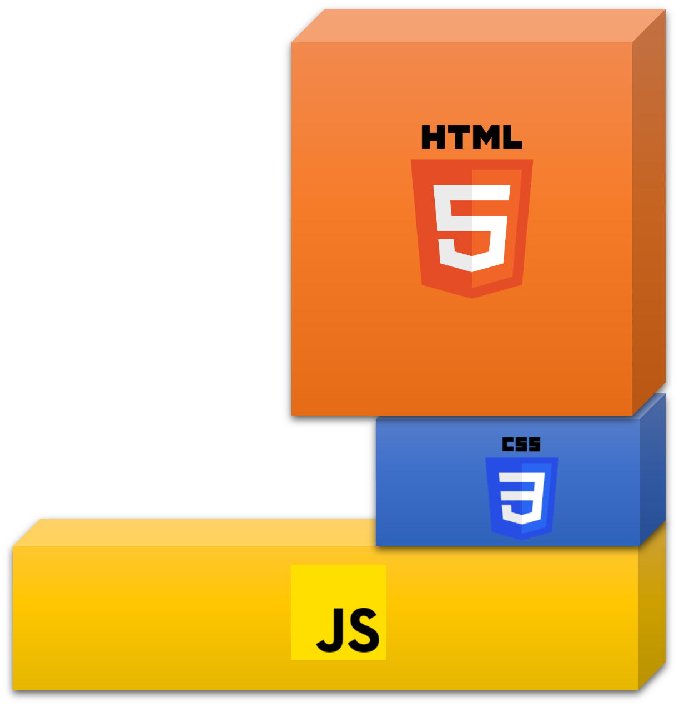
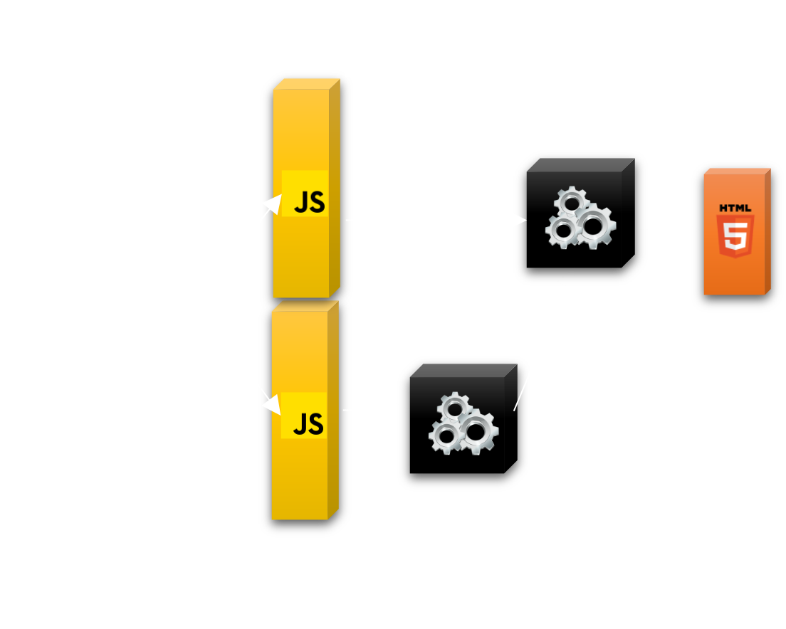
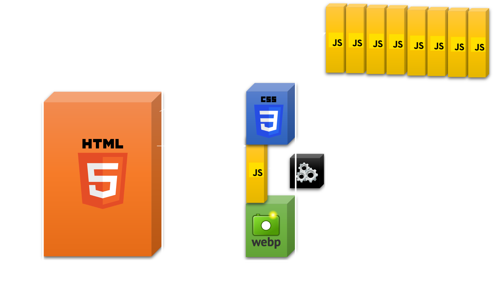

Performance Web
Performance Web

FP: First Painting
FP: First Painting
FCP: First Contentful Painting
FP: First Painting
FCP: First Contentful Painting
TTI: Time to Interactive
|
Statique |
Interactivité FCP TTI |
|
Statique |
Interactivité FCP TTI |
|
|
Généré |
Interactivité FCP TTI |
|
Statique |
Interactivité FCP TTI |
|
|
Généré |
Interactivité FCP TTI |
|
|
CSR |
 |
Interactivité FCP TTI |
|
Statique |
Interactivité FCP TTI |
|
|
Généré |
Interactivité FCP TTI |
|
|
CSR |
Interactivité FCP TTI |
|
|
SSR |
Interactivité FCP TTI |
|
Statique |
Interactivité FCP TTI |
|
|
Généré |
Interactivité FCP TTI |
|
|
CSR |
Interactivité FCP TTI |
|
|
SSR |
Interactivité FCP TTI |
|
|
Résumable ( |
Interactivité FCP TTI |
Premiers pas
Premiers pas
npm create qwik@latest
npm create qwik@latest
npm run start
Starting App
Pour ceux qui aiment React
Oui, ça ressemble à du React.
Et on peut aussi intégrer des composants Angular
QwikLoader
QwikLoader
Mini JS - 1 kb
Inliné si possible
Comment ça marche ?
(Pour les débutants, vous pouvez dormir 2 minutes)
Ce qui est envoyé ?
Comment il s'y retrouve ?
...
0
Mon panier
...
Gestion d'état
Gestion d'état
Serialization (Les implications du $)
Qwik OptimizerUn composant Qwik
... et sa version "compilée"
//app.js
import { componentQrl, qrl } from '@builder.io/qwik';
const App = /*#__PURE__*/ componentQrl(
qrl(() => import('./app_component_akbu84a8zes.js'), 'App_component_AkbU84a8zes')
);
export { App };
// app_component_akbu84a8zes.js
import { jsx as _jsx } from '@builder.io/qwik/jsx-runtime';
import { qrl } from '@builder.io/qwik';
export const App_component_AkbU84a8zes = () => {
console.log('render');
return /*#__PURE__*/ _jsx('p', {
onClick$: qrl(
() => import('./app_component_p_onclick_01pegc10cpw'),
'App_component_p_onClick_01pEgC10cpw'
),
children: 'Hello Qwik',
});
};
// app_component_p_onclick_01pegc10cpw.js
export const App_component_p_onClick_01pEgC10cpw = () => console.log('hello');
// Invalid
const foo = 'foo';
foo$(foo); // foo is not exported, so it's not importable
// Valid
export const bar = 'bar';
foo$(bar);
// Valid
import { bar } from './bar';
foo$(bar);
Allons un peu plus loin
Allons un peu plus loin
Utilisation de Slots / Layouts
CSS Modules
Directory based routing
Récupération de paramètres
Route loaders
Ressources
Head
meta, links, ...
Optimisation automatique des images
Du backend ?
Du backend ?
routeAction$
Endpoints
Middlewares
server$
Tests unitaires
Tests unitaires
Librairies tierces
Librairies tierces
Partytown
Partytown
Puis utilisation de hljs "comme si de rien n'était"
...et bien d'autres choses encore !
IntégrationsBon alors, la démo ?
Bon alors, la démo ?
Intégration Cloud Run
Plus éco-responsable ?
Plus éco-responsable ?
Questions ?
NOTE: Aucun animal sauveteur imaginaire n'a été blessé durant cette présentation
J'attends vos retours
Télécharger du JS au clic ?
Mais cela doit être lent/ne pas marcher !
Je savais que vous alliez poser la question
Si votre réseau est si lent/mauvais:
Si votre réseau est si lent/mauvais:
Version hors-ligne ?
Version hors-ligne ?
Prefetch
Version hors-ligne ?
Version hors-ligne ?
 cfrezier
cfrezier